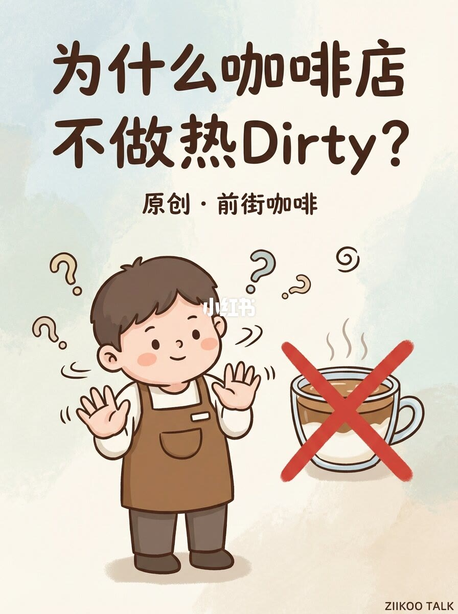
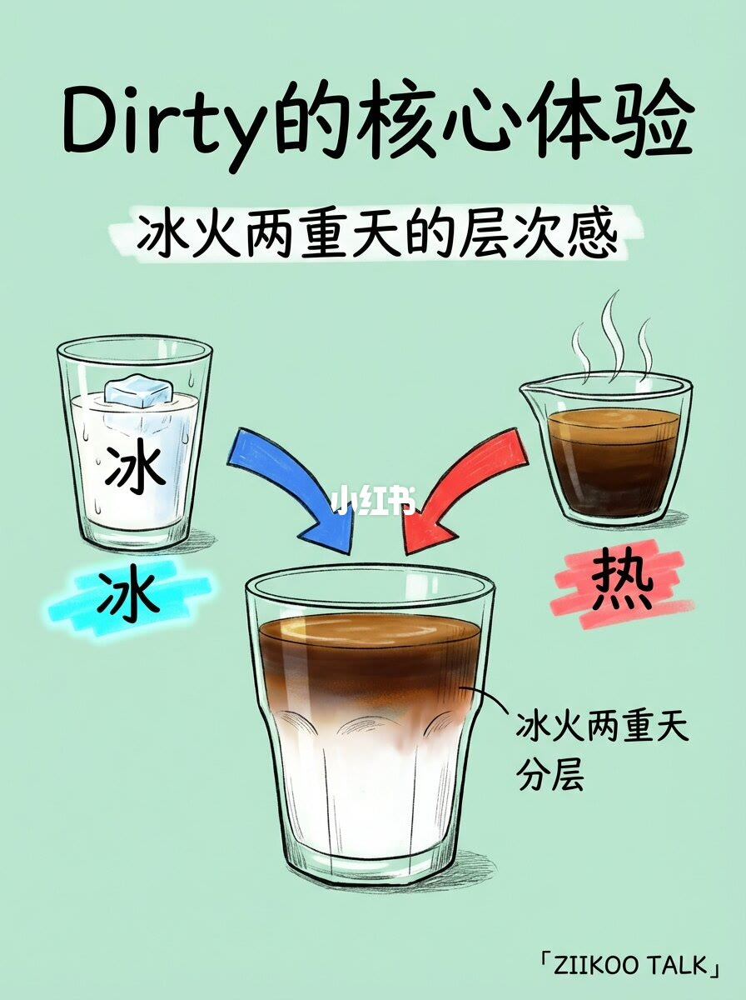
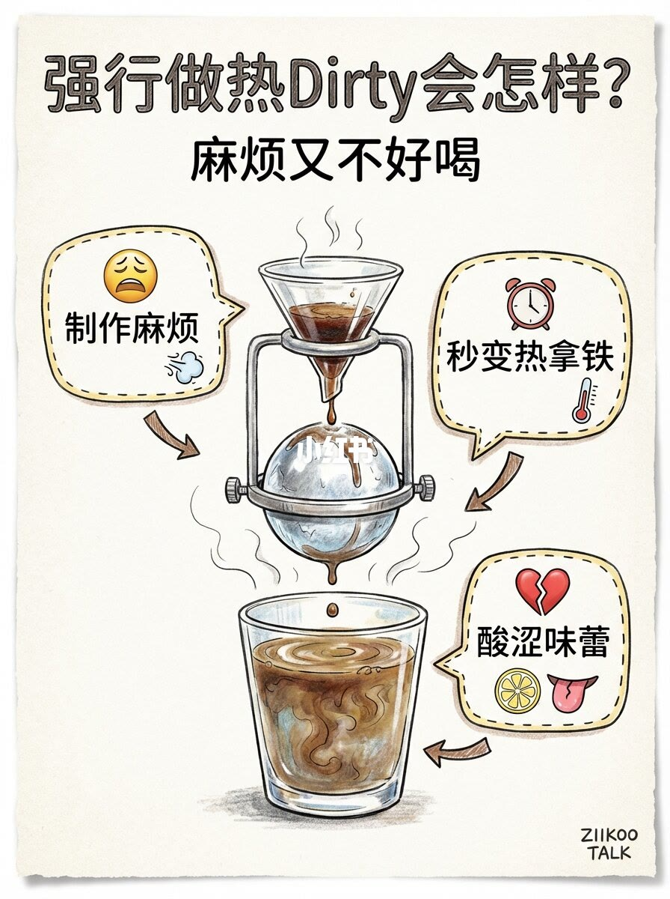
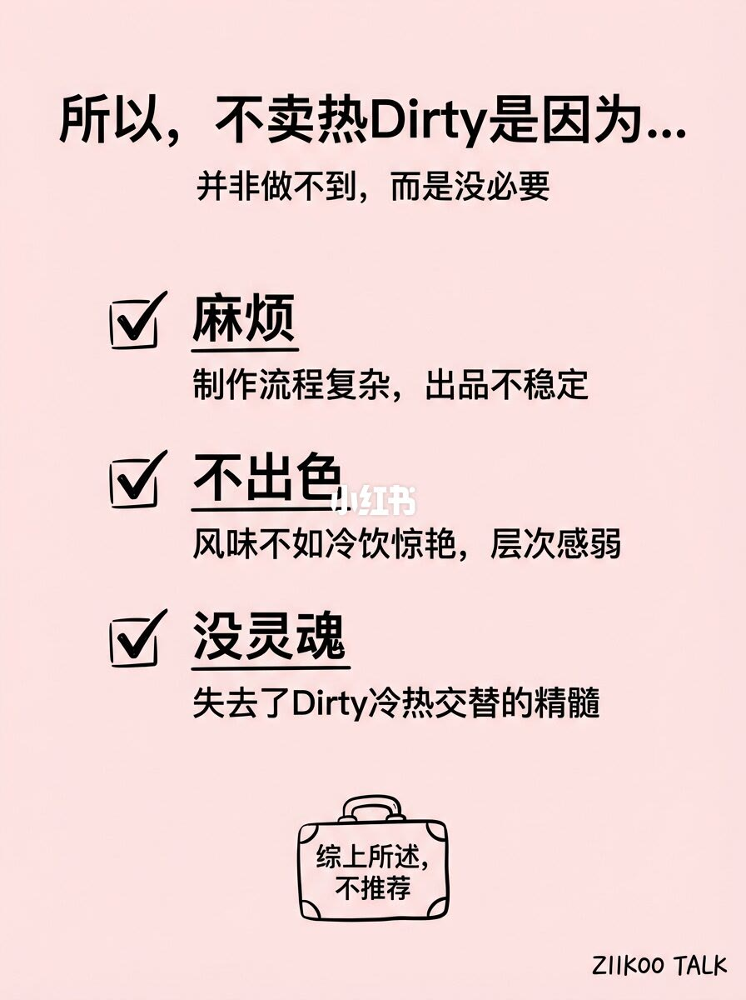

图文实录 · 小红书 · ZIIKOO TALK
为什么咖啡店不做热 Dirty？
Dirty 靠的是冷奶和热浓缩叠在一起。热奶一换上去，这口冷热对比就没了，店家觉得麻烦，也不更好喝。
1/4
封面直接打叉
标题是「为什么咖啡店不做热 Dirty」。中间写原创 · 前街咖啡。画面是咖啡师摆手拒绝，旁边一杯分层的 Dirty 冒着热气，上面画了大红叉。这一页只提出问题，没有理由。

2/4
核心体验是冰火两重天
标题「Dirty 的核心体验」，副题「冰火两重天的层次感」。左边是加了冰块的牛奶，标成冰；右边是冒热气的浓缩，标成热；中间杯子里深色浓缩在上、白奶在下，交界处有一点洇开，标注「冰火两重天分层」。图上没有写毫升或温度。

3/4
强行做热的三个结果
标题「强行做热 Dirty 会怎样」，副题「麻烦又不好喝」。画面是热咖啡倒进热奶，杯子冒着气。三个批注：制作麻烦；秒变热拿铁；酸涩味蕾。图上没有解释酸从哪来，也没有给出温度差的数字。

4/4
不是做不到，是没必要
收束句是「所以，不卖热 Dirty 是因为……并非做不到，而是没必要」。三条：麻烦，制作流程复杂、出品不稳定；不出色，风味不如冷饮惊艳、层次感弱；没灵魂，失去 Dirty 冷热交替的精髓。底下箱子里写「综上所述，不推荐」。

汇总
拒绝的是温差，不是加热本身
第 2 页把 Dirty 定义成冰奶加热浓缩的分层。第 3 页说热奶版本会变成热拿铁，又麻烦又发酸涩。第 4 页把不卖收成麻烦、不出色、没灵魂，并写明不是做不到。没有配方、温度和店规，不能当成所有店的操作标准。封面署名前街咖啡，页脚是 ZIIKOO TALK。